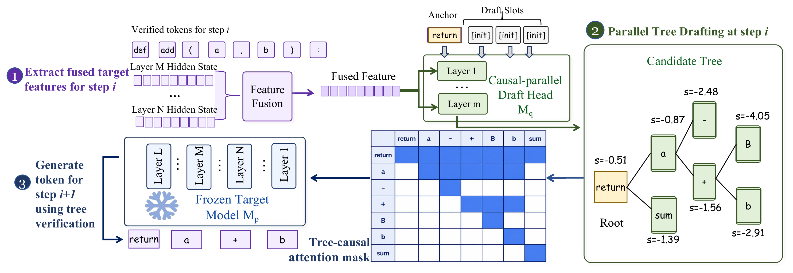
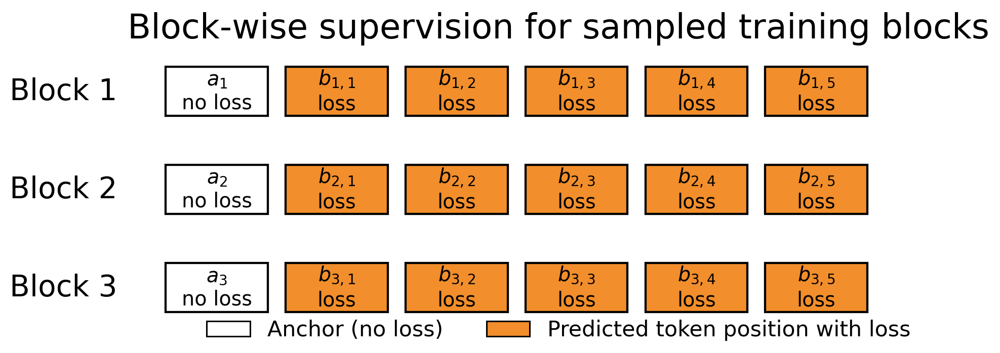

JetFlow
以并行树形草稿突破投机解码的扩展上限
1UC San Diego 2Zhejiang University 3UIUC 4Nanjing University 5StepFun
投机解码（speculative decoding）存在一个扩展上限：只有当接受率维持在高位、且起草成本足够低时，更大的草稿预算才有收益；而以往的草稿头则面临因果性与效率之间的两难：自回归草稿头以路径为条件，但其成本随树深度增长；块扩散（block-diffusion）草稿头虽能一次性起草，却对各分支独立打分，从而构造出单看各自合理、彼此却互不一致的树。JetFlow 在冻结的目标模型给出的融合隐藏状态之上训练一个因果并行草稿头（causal parallel draft head），使候选树的打分与目标模型自身的自回归分解保持一致，从而由完整的目标模型一次前向传播即可无损（lossless）地验证整棵树。此时更大的预算便转化为更长的接受前缀：在 MATH-500 上加速比为 9.64×，在开放式对话上为 4.58×（Qwen3-8B，H100，贪心，预算 256），并且这些收益能延续到 JetFlow 自有引擎上的真实单流服务中。
JetFlow replay
Parallel tree decoding replay
每个面板最终给出的文本与自回归解码完全一致；JetFlow 只是在每个验证步中提交更多 token。各基准上的实测加速比见下方结果表。
树质量
树形草稿与验证
两种草稿头花费相同的草稿预算；差别在于这份预算买到的树的质量。本文剖析出 JetFlow 因果草稿头的两点优势：它让排名最高的那条分支——即验证器实际跟随的那条——对目标模型保持保真，而且无需调节损失加权（loss weighting）即可做到这一点。
分支保真度（branch faithfulness）
块扩散头从一个共享的隐藏状态生成所有位置，各深度之间没有因果掩码（causal mask），因此深度 2 的分布从不以深度 1 所选的 token 为条件。当两个位置各自独立地偏好彼此无法相接的 token 时，代理目标仍会给它们的组合打出高分，并把它提升到树的顶端。因果草稿头在各深度之间施加掩码，将每个位置锚定到模型自身在前一位置的选择，因此其排名第一的分支所携带的分数能与目标模型一致。一轮起草就能把这一差别具体呈现出来：
- 接受路径
- 草稿头的首选（未被采纳）
- 被拒绝
- 额外赠送
| 排名第一的分支保真度（50 个 MATH-500 提示词，无损失加权） | 因果 | 扩散 |
|---|---|---|
| 保真排名第一（<+5 nats） | 42% | 6% |
| 极端差距（≥+80 nats） | 0% | 26% |
| 平均接受长度 | 9.46 | 4.84 |
无需调节损失加权
双向扩散头借助指数型损失加权能挽回其中一部分，但只在调好的设定附近有效：扩散头在单一加权值处达到峰值，在两端则崩溃，而因果草稿头在整个取值范围内都保持 8.3-8.5×。因果掩码彻底消除了调节任何加权的必要。
| 按损失加权划分的 MATH-500 加速比 | γ=0 | γ=3 | γ=7 | γ=15 |
|---|---|---|---|---|
| 因果（JetFlow） | 8.29 | 8.50 | 8.40 | 8.41 |
| 扩散头 | 5.46 | 8.16 | 8.36 | 6.17 |
服务
推理引擎
JetFlow 运行在自带的独立推理引擎之上，不依赖任何外部服务栈。它以 nano-vLLM 的极简理念为起点，但在此之外是一套完全独立的引擎。目标模型在树形注意力掩码（tree-attention mask）下一次前向传播即可验证投机树的全部节点，且接受规则在构造上即为无损，精确保留目标模型的输出。因此平均接受长度取决于模型与草稿树，而非硬件；端到端加速比与吞吐量则取决于 GPU 的算力与带宽。一个融合的 SM90 分页 FlashAttention 核函数（NVIDIA CuTe DSL）在注意力内部施加树形掩码，无需为每个请求物化一个稠密掩码。
JetFlow 在自带引擎上运行、不依赖任何外部服务，单张 B200（Qwen3-8B、MATH-500、batch 1、预算 127）：相对自回归解码取得 6.64× 的端到端加速比，τ=8.93 每轮接受 token 数。 JetFlow 引擎上实测的墙钟时间（单张 B200）；MATH-500 的 32 条 prompt 子集。
方法
JetFlow 的工作原理
基于草稿头的投机解码面临因果性与效率之间的两难：自回归草稿头让每个 token 都以其所在路径为条件，却要为每一层树深度付出一次前向传播；而块扩散头一次前向传播即可起草整个块，但各位置的打分相互独立，从而拼出目标模型会拒绝的分支。JetFlow 既保留了一次前向传播的效率，又找回了条件依赖。在冻结的目标模型的融合隐藏状态之上（其深层特征已被证明编码了若干未来 token），它训练出一个因果并行草稿头：一次前向传播即可输出带打分的候选树，其分支打分遵循目标模型自身的自回归分解，而非各位置独立的替代式打分。随后，冻结的目标模型在一次前向传播中验证整棵树，并提交它认可的最长路径，目标模型的输出分布丝毫不变。

草稿头的训练
仅训练草稿头，目标模型保持冻结，因此 JetFlow 可挂接到已上线的模型而不触动其权重。草稿头读取目标模型的多层融合特征，并以目标模型自身的下一 token 分布（而非硬标签）作为监督信号，从而继承候选 token 之间的相对偏好——这正是树形草稿据以对分支排序所需的。监督在草稿的各层深度上保持因果：每个位置都以其分支中更早选定的 token 为条件进行训练，正是这一点让一次并行传播得以输出一棵分支内部自洽的树。

在预算 256（贪心）下，JetFlow 在每个基准上都领先 DFlash-T：MATH-500 9.64× 对 8.78×，GSM8K 7.82× 对 7.04×，HumanEval 7.12× 对 6.31×。完整表格：
| 方法 | 预算 | GSM8K | MATH-500 | AIME25 | HumanEval | MBPP | LCB | MT-Bench | |||||||
|---|---|---|---|---|---|---|---|---|---|---|---|---|---|---|---|
| 加速比 | τ | 加速比 | τ | 加速比 | τ | 加速比 | τ | 加速比 | τ | 加速比 | τ | 加速比 | τ | ||
| Temperature = 0（贪心） | |||||||||||||||
| EAGLE-3 | 64 | 2.53 | 4.31 | 2.36 | 4.13 | 2.35 | 4.04 | 2.49 | 4.26 | 2.22 | 3.81 | 2.09 | 3.62 | 2.19 | 3.88 |
| DFlash-T | 64 | 5.63 | 6.18 | 6.51 | 7.16 | 6.40 | 6.96 | 5.08 | 5.57 | 4.99 | 5.49 | 5.47 | 6.06 | 3.74 | 4.51 |
| DFlash-T | 128 | 6.63 | 7.31 | 8.27 | 9.19 | 7.93 | 8.66 | 5.93 | 6.52 | 5.70 | 6.28 | 6.42 | 7.25 | 4.12 | 5.14 |
| DFlash-T | 256 | 7.04 | 7.77 | 8.78 | 9.81 | 8.33 | 9.24 | 6.31 | 6.96 | 6.09 | 6.70 | 6.75 | 7.72 | 4.26 | 5.41 |
| JetFlow | 64 | 5.98 | 6.56 | 6.76 | 7.42 | 6.47 | 7.00 | 5.53 | 6.06 | 5.34 | 5.88 | 5.95 | 6.59 | 3.97 | 4.77 |
| JetFlow | 128 | 7.34 | 8.05 | 8.93 | 9.95 | 8.26 | 9.10 | 6.66 | 7.28 | 6.31 | 6.95 | 7.29 | 8.21 | 4.37 | 5.52 |
| JetFlow | 256 | 7.82 | 8.62 | 9.64 | 10.76 | 8.78 | 9.82 | 7.12 | 7.78 | 6.73 | 7.43 | 7.67 | 8.79 | 4.58 | 5.94 |
| Temperature = 1（采样） | |||||||||||||||
| EAGLE-3 | 64 | 2.35 | 4.17 | 2.23 | 4.00 | 2.11 | 3.73 | 2.35 | 4.13 | 2.13 | 3.70 | 1.99 | 3.49 | 1.96 | 3.63 |
| DFlash-T | 64 | 5.28 | 5.77 | 5.68 | 6.26 | 4.94 | 5.46 | 4.65 | 5.09 | 4.65 | 5.11 | 5.28 | 5.82 | 3.50 | 4.22 |
| DFlash-T | 128 | 6.11 | 6.72 | 6.79 | 7.60 | 5.40 | 5.98 | 5.29 | 5.76 | 5.22 | 5.75 | 5.99 | 6.71 | 3.66 | 4.59 |
| DFlash-T | 256 | 6.41 | 7.17 | 7.10 | 8.13 | 5.26 | 6.20 | 5.43 | 6.03 | 5.49 | 6.12 | 6.26 | 7.17 | 3.81 | 4.88 |
| JetFlow | 64 | 5.63 | 6.19 | 5.97 | 6.60 | 4.95 | 5.48 | 5.02 | 5.52 | 5.00 | 5.51 | 5.76 | 6.38 | 3.63 | 4.37 |
| JetFlow | 128 | 6.76 | 7.49 | 7.39 | 8.36 | 5.76 | 6.49 | 5.82 | 6.39 | 5.78 | 6.39 | 6.84 | 7.74 | 3.99 | 5.01 |
| JetFlow | 256 | 7.16 | 8.03 | 7.83 | 9.01 | 5.94 | 7.06 | 6.19 | 6.85 | 6.11 | 6.83 | 7.25 | 8.29 | 4.06 | 5.22 |
定位与对比
投机解码器的加速比是两个因子的乘积：目标模型接受了多少起草出的 token，以及起草这些 token 的代价有多低。多数已有工作都以牺牲一个因子为代价改善另一个。Medusa、EAGLE-3 等自回归草稿头遵循目标模型自身的分解、接受表现良好，但它们一次只起草一个 token，因而吞吐量始终受限于串行起草。并行块扩散头一次传播即可起草整个块、单 token 代价几近于零，但各位置独立打分，于是更深的树分支会逐渐偏离与目标模型的一致。检索式草稿器干脆跳过学习模型，代价是依赖词面重叠或重复文本。JetFlow 同时保住了两个因子：它以扩散头的代价、在一次并行传播中起草整棵树，同时又让每个位置都以其分支前缀为条件、获得因果草稿头的接受表现。这正是为何更大的草稿预算能持续转化为更长的接受前缀，而不是趋于饱和。
成本与局限
上述加速比是端到端且无损的，但并非处处一致。采样（T=1）下的优势小于贪心解码，在 AIME25 等最难的推理集上，相对最强扩散基线的领先幅度也会收窄。墙钟服务加速比也会低于论文中的算法加速比，因为真实服务会引入接受长度比所无法体现的核函数启动与主机开销。最优草稿预算本身也是一种权衡：更大的树会提高接受长度，但也会增加每轮的验证成本，因此最佳工作点取决于模型与硬件。
BibTeX
@misc{hu2026jetflow,
title = {JetFlow: Breaking the Scaling Ceiling of Speculative Decoding with Parallel Tree Drafting},
author = {Hu, Lanxiang and Feng, Zhaoxiang and Wu, Yulun and Yuan, Haoran and Zhao, Yujie and
Qian, Yu-Yang and Wang, Bojun and Jiang, Daxin and Zhu, Yibo and Rosing, Tajana and Zhang, Hao},
year = {2026},
eprint = {2606.18394},
archivePrefix = {arXiv},
primaryClass = {cs.CL},
url = {https://arxiv.org/abs/2606.18394}
}预览版本：实时回放使用模拟计时；结果表格为论文实测数据。§3 的树为示意。